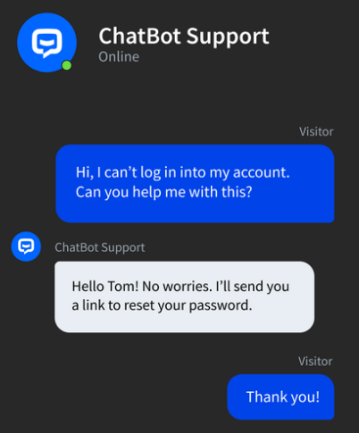

<div class="container">
    <div class="card carta">
        <!-- ======= About Section ======= -->
        <section id="about" class="about section-bg">
            <div class="container" data-aos="fade-up">

                <div class="section-title">
                    <h3>Producto 1 <span> - Mensualidad</span></h3>
                </div>

                <div class="row">
                    <div class="col-lg-6" data-aos="fade-right" data-aos-delay="100">
                        
                    </div>
                    <div class="col-lg-6 pt-4 pt-lg-0 content d-flex flex-column justify-content-center"
                        data-aos="fade-up" data-aos-delay="100">
                        <h3> Qué puede hacer tu chatbot de WhatsApp</h3>

                        <p class="fst-italic">
                            Conecta ChatBot con tus demás aplicaciones para facilitar que tus seguidores y clientes
                            potenciales se pongan en contacto contigo.
                        </p>
                        <ul>
                            <li>
                                <i class="fas fa-comment"></i>
                                <div>
                                    <h5>Mensajes de bienvenida personalizables</h5>
                                    <p>Reciba a los visitantes con un mensaje de bienvenida personalizado, que se
                                        mostrará en la ventana de chat de Messenger para aquellos que interactúen con su
                                        chatbot por primera vez.
                                    </p>
                                </div>
                            </li>
                            <li>
                                <i class="fas fa-comments"></i>
                                <div>
                                    <h5>Mensajes enriquecidos para WhatsApp</h5>
                                    <p>Mejore la experiencia del usuario con mensajes enriquecidos que ofrecen una
                                        navegación intuitiva y respuestas de chat interactivas.</p>
                                </div>
                            </li>
                        </ul>
                        <h5>Experiencia personalizada</h5>
                        <p>
                            Crea respuestas personalizadas con ChatBot. La integración con WhatsApp guarda
                            automáticamente atributos como el avatar, el nombre y la URL. Utiliza directamente los
                            atributos en tu respuesta o pásalos a tu base de datos.
                        </p>
                    </div>
                </div>

            </div>
        </section><!-- End About Section -->
    </div>
</div>